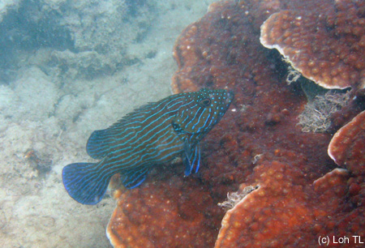

Reef Fishes of Singapore
|
Copper-banded butterflyfish, Chaetodontidae: Chelmon rostratus, Raffles Lighthouse, 2 May 2003. Butterflyfishes typically have a long snout to feed on individual coral polyps. |
Orange-banded butterfly fish (top) & vermiculated angelfish (bottom), Chaetodontidae: Coradion chrysozonus (top) & Chaetodontoplus mesoleucus (bottom), Pulau Hantu western patch reef, August 2003 |
|
Eight-band butterflyfish, Chaetodontidae: Chaetodon octofasciatus |
Tomato anemonefish, Pomacentridae: Amphiprion frenatus, Raffles Lighthouse, 2002. Clownfish have a symbiotic relationship with sea anemones. While they can safely nestle in the tentacles of their hosts, other fishes are paralysed by the battery of stinging cells. |
|
Tomato anemonefish, Pomacentridae: Amphiprion frenatus |
Tomato anemonefish, Pomacentridae: Amphiprion frenatus, Pulau Hantu western patch reef, August 2003 |
|
Tomato anemonefish, Pomacentridae: Amphiprion frenatus, Pulau Hantu western patch reef, August 2003 |
Star-eyed pufferfish, Tetraodontidae: Arothron stellatus, Pulau Hantu East, 2002. When agitated, the pufferfish inflates itself tremendously to intimidate predators and aggressors. |
|
Giant goby, Gobiidae: Exyrias bellisimus, Pulau Hantu western patch reef, August 2003. This individual measured about 25 cm in length. |
Mudskipper, Gobiidae: Boleophthalmus boddarti, Pulau Hantu, 2002. Mudskippers are able to spend copious amounts of time out of water due to special physiological adaptations. |
|
Carpet eel blenny, Pseudochromidae: Congrogadus subducens, Raffles Lighthouse, 14 January 2004 |
Damselfish, Pomacentridae: Neopomacentrus bankieri, Raffles Lighthouse, 2 Jan 2004 |
|
Long-spined scorpionfish, Scorpaenidae: Paracentropogon longispinis, Sentosa, 21 Feb 2004. Can you spot the scorpionfish? Hint: Look for the eyes. Scorpionfish blend very effectively into the background, and wait around to ambush prey. The spines on their head can inject a painful toxin to protect themselves. |
False clown anemonefish, Pomacentridae: Amphiprion ocellaris, Kusu Island, 2004. Our local version of 'Nemo'. |
|
Copperbanded butterflyfish in bubu, Chaetodontidae: Chelmon rostratus, Kusu Island, 2004. Sometimes fish traps such as the bubu are still found in Singapore. If the traps have been abandoned or not checked on a regular basis, the fish inside could starve and die. |
Fish trapped in bubu, Labrador Beach, April 2005. Abandoned fish traps such as this bubu can cause much distress, injury and death to the fish trapped within. Not to mention that Labrador is a Nature Reserve! So trapping and removing animals are strictly not allowed. |
|
Copperbanded butterflyfish: Chaetodontidae, Chelmon rostratus, Labrador Beach, April 2005 |
False clown anemonefish, Pomacentridae: Amphiprion ocellaris, Kusu Island, May 2004 |
|
Fan-bellied filefish, Monacanthidae: Monacanthus chinensis, Labrador Beach, April 2005. The fan-bellied filefish is able to change its skin colour in a matter of seconds. Sending out a warning? |
Labrador Beach, April 2005 |
|
Blenny, Blenniidae, Pulau Hantu, March 2005 |
Red-striped cardinalfish, Apogonidae: Apogon margaritophorus, Pulau Hantu, March 2005. These tend to form aggregations around rocks and crevices of weedy areas in coastal reefs and lagoons. |
|
Fan-bellied filefish, Monacanthidae: Monacanthus chinensis, Pulau Hantu, March 2005 |
Razorfish, Centriscidae: Aeoliscus strigatus, Pulau Hantu, March 2005. Razorfish are usually found swimming with heads pointed downwards. Sometimes they stay among sea urchin spines for protection against aggressors. |
|
Seawhip goby, Gobiidae: Bryaninops amplus, Kusu Island, March 2005. This small goby grows to a maximum size of 5cm. Commonly found perching on seawhips. |
 Blue-lined grouper, Serranidae: Cephalopholis formosa, Raffles Lighthouse, March 2005. Groupers are voracious predators and popular food fish. |
|
Many-spotted sweetlips, Haemulidae: Plectorhinchus chaetodonoides, Raffles Lighthouse, March 2005. The juvenile of the sweetlips looks remarkably different from the adult. Sweetlips are characterised by thick fleshy lips. |
Giant goby, Gobiidae: Exyrias bellisimus, Pulau Hantu, September 2003 |
|
Baby lizardfish, Synodontidae, St John's Island, February 2005 |
Damselfish, Pomacentridae, St John's Island, February 2005 |
|
Seahorse, Syngnathidae: Hippocampus kuda, St John's Island, February 2005. Unlike most other animals, it's the male seahorse that broods the eggs until they hatch, in a special pouch on his abdomen. |
Filefish, Monacanthidae, Pulau Hantu, April 2005. The mottled and bristly skin of the filefish helps to camouflage it on the reef. |
|
Butterfly whiptail, Nemipteridae: Pentapodus setosus, Pulau Hantu, April 2005. This fish was spotted sifting through silt covered rubble in search of food. |
Back to top